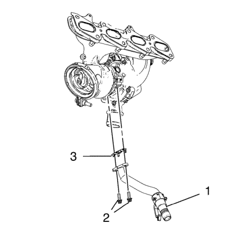
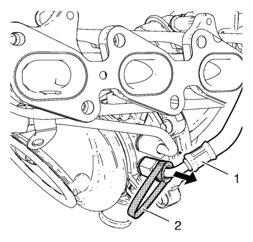
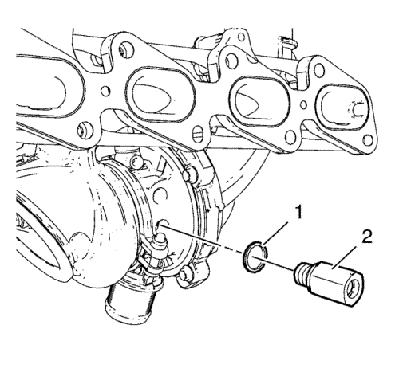

Desmontaje del turbocompresor
Herramienta especial
EN-49940 Herramienta de desmontaje de acoplamientos rápidos
Si desea informarse sobre herramientas regionales equivalentes, consultar Herramientas especiales .

- Retire los 2 pernos (2) del tubo de retorno de aceite del turbocompresor.
- Retire el tubo (1) de retorno de aceite del turbocompresor y la junta (3) del turbocompresor.

Nota: Los acoplamientos de cierre rápido deben sustituirse siempre que se desmontan los tubos de refrigerante del turbocompresor
- Monte la herramienta de desmontaje EN-49940 (2) en el tubo (1) de alimentación de refrigerante del turbocompresor y el conector de cierre rápido, tal como se muestra.
- Comprima la herramienta de desmontaje EN-49940 y extraiga el tubo de alimentación de refrigerante del turbocompresor en el sentido de la flecha.

- Desmonte el conector de cierre rápido (2) y el anillo de junta (1).
- Utilice el mismo procedimiento con el tubo de retorno de refrigerante del turbocompresor y el conector de cierre rápido del tubo de retorno de refrigerante del turbocompresor.
| © Copyright Chevrolet. All rights reserved |